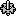

These objects are displayed in the tree windowpane, if its selected Computer has Adroit installed on it and if its Agent Server is running.
The icons and text used to display this object in the tree windowpane:
One of the following icons precedes the configured Agent Server name followed by the Adroit project name in brackets i.e. AgentServerName(AdroitProjectName) :

ore.g. Adroit (IAN)
The grey Agent Server icon , indicates that a connection has not yet been made to the Agent Server OR that Agent Server is not running. Clicking on or selecting the Agent Server icon will attempt to connect to the server.
If the connection to the Agent Server is successful, then this green icon is displayed:
 this object to access its grid windowpane.
this object to access its grid windowpane.The tree displays all the agent types that match the selected agent filter for this Agent Server on this computer.
Note1: The agent filter of the Agent Server can select the following agent groupings: basic, advanced, system or all agents, the basic agent types filter is selected by default.
Note2: All the agent
types of the selected agent filter are displayed, irrespective of whether
agents of this type have been configured.
Hence when the Agent Server is initially opened it is not apparent which
of the displayed agent types contain agents, click on each agent type
to determine this. If the selected agent type contains agents, then an
expand icon appears next to it.
The following commands are only specific to selected Agent Server objects, in the tree view windowpane:
For details on which agent types form part of the default agent groups, see About Agent Types.